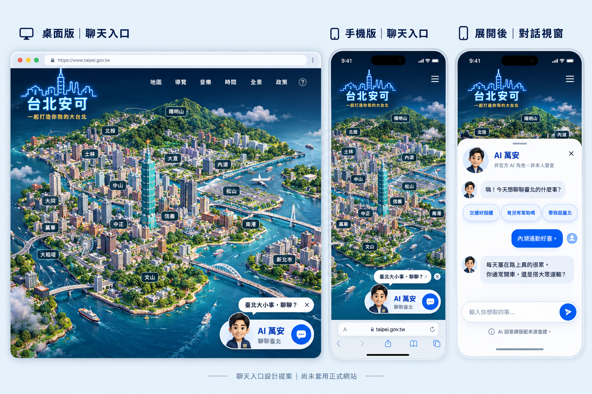
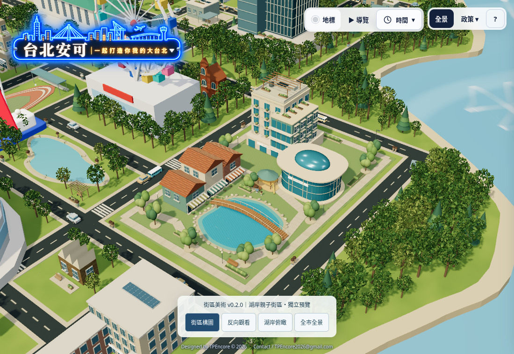
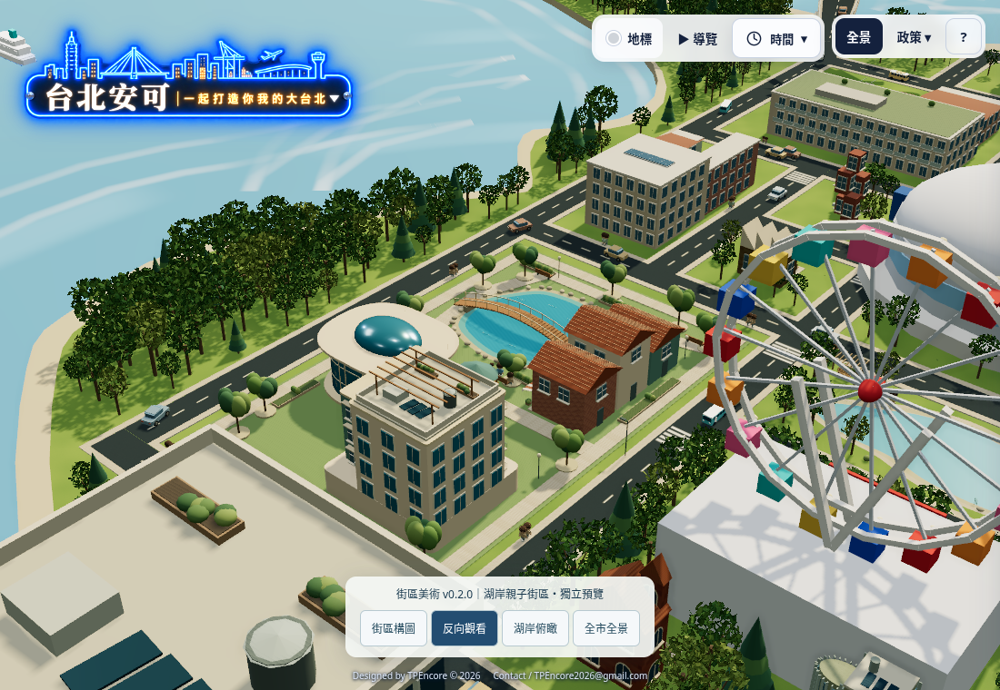
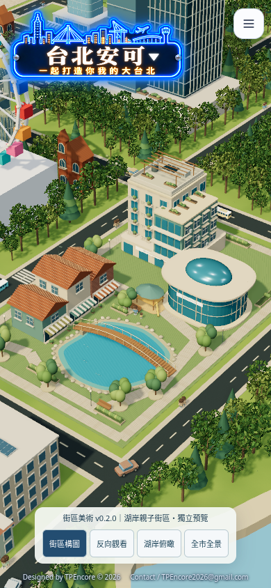

台北安可・政策市／獨立美術研究街區美術 v0.2.0
在現有臺北托育政策基地內，實作退台親子館、弧形繪本室、連棟商店及湖岸拱橋。以下右圖是網頁實際渲染；本次只改一個街區，周邊城市仍是既有模型。
開啟可旋轉 3D 預覽 →生成 mockup｜美術方向參考

作為建築多樣性、景觀層次與氛圍參考。不是實際 3D 成品；圖中政府網址為生成誤植，本站是 tpencore.tw。實際網頁｜v0.2.0 街區

原有介面、Logo、道路及島形保留。這是局部美術樣板，尚未宣稱達到生成圖的全市細緻度。實際網頁｜反向觀看

實際網頁｜手機

獨立預覽・未替換正式網站美術。店名與街景為示意，非真實商家或實際地籍復原。